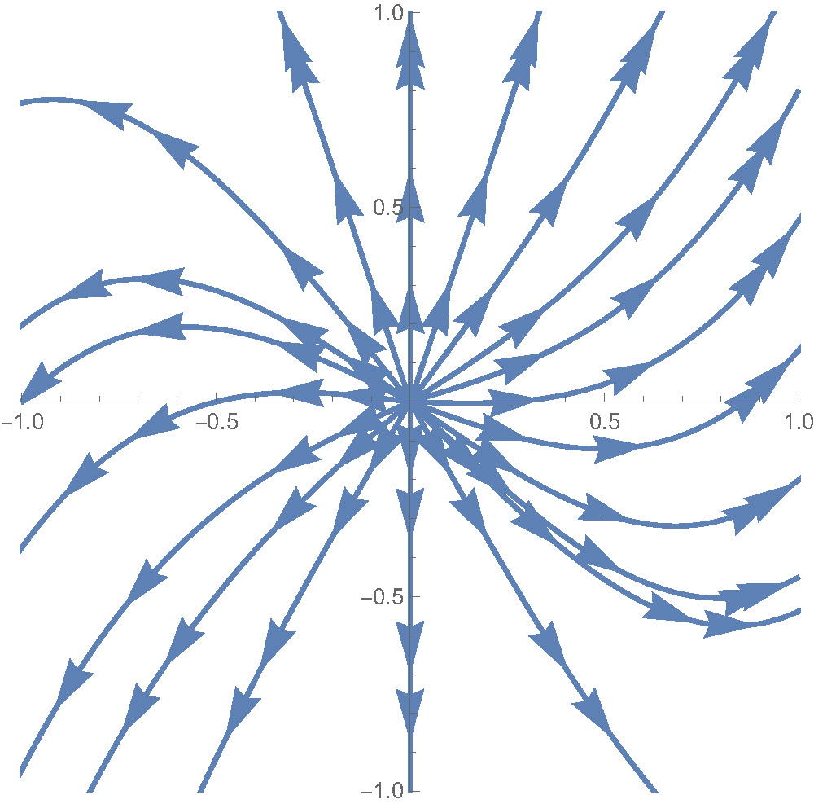

7 Local phase portrait
7.1 Linearisation method
- Let \(f,g:D\to{\mathbb{R}}\) be smooth functions on an open set \(D\subset{\mathbb{R}}^2\) and \((x_*,y_*)\in D\) be a fixed point of the dynamical system (5.1):
\[ \begin{cases} x'=f(x,y),\\ y'=g(x,y),\end{cases} \tag{7.1}\]
i.e. \(f(x_*,y_*)=g(x_*,y_*)=0\).
Expanding \(f(x,y)\) into the Taylor series in the neighbourhood of \((x_*,y_*)\), one gets \[ \begin{aligned} f(x,y)=\underbrace{f(x_*,y_*)}_{\color{RedViolet}=0}&+{\dfrac{\partial f}{\partial x}}(x_*,y_*)(x-x_*)\\&+{\dfrac{\partial f}{\partial y}}(x_*,y_*)(y-y_*)+\ldots, \end{aligned} \] where, for \(|x-x_*|<\varepsilon\), \(|y-y_*|<\varepsilon\), the omited terms are less than \(\mathrm{const}\cdot \varepsilon^2\). The same can be done for \(g(x,y)\), hence: \[ g(x,y)\approx {\dfrac{\partial g}{\partial x}}(x_*,y_*)(x-x_*)+{\dfrac{\partial g}{\partial y}}(x_*,y_*)(y-y_*) \] for \((x,y)\) close to \((x_*,y_*)\).
Denoting \(u(t):=x(t)-x_*\), \(v(t)=y(t)-y*\), and omitting the terms of the order less than \(\varepsilon\), we get that \[ \begin{pmatrix}u\\v\end{pmatrix}'\approx J(x_*,y_*) \begin{pmatrix}u\\v\end{pmatrix}, \] where \(J(x_*,y_*)\) is the value at \((x_*,y_*)\) of the matrix-function
\[ J(x,y):=\begin{pmatrix}\dfrac{\partial f}{\partial x}(x,y) & \dfrac{\partial f}{\partial y}(x,y)\\ \dfrac{\partial g}{\partial x}(x,y) & \dfrac{\partial g}{\partial x} (x,y)\end{pmatrix}, \tag{7.2}\]
if only \(|u|\) and \(|v|\) are small enough, i.e. in a neigbourhood of \((u,v)^T=(0,0)^T\in{\mathbb{R}}^2\).
7.2 Definition
7.3 Remark
7.4 Remark
With an abuse of notations, the linearized system (7.3) is typically written in terms of \((x,y)\) rather than \((u,v)\). (Keeping in mind that the result will be about the fixed point at \((x_*,y_*)\), not at \((0,0)\).)
7.5 Definition
7.6 Definition
A fixed point \((x_*,y_*)\) is called hyperbolic if both eigenvalues \(\lambda_1\) and \(\lambda_2\) of \(J(x_*,y_*)\) (i.e. of the Jacobian matrix (7.2) at \((x_*,y_*)\)), have non-zero real parts (\(\mathrm{Re} \lambda_1\neq0\), $ _2$). (In particular, a fixed point is hyperbolic, if \(\lambda_1,\lambda_2\in{\mathbb{R}}\) with \(\lambda_1\neq 0\), \(\lambda_2\neq0\).) Therefore,
| hyperbolic | non-hyperbolic |
|---|---|
| node | centre |
| saddle | line of fixed points |
| spiral | plane of fixed points |
| star | |
| degenerate node |
7.7 Theorem: Hartman–Grobman
Let \(f,g:{\mathbb{R}}^2\to{\mathbb{R}}\) be smooth functions and \((x_*,y_*)\) be a hyperbolic fixed point of (7.1). Then there exists a neighbourhood \(U\subset{\mathbb{R}}^2\) of \((x_*,y_*)\) and a homeomorphism \(H:U\to{\mathbb{R}}^2\) (i.e. \(H:U\to H(U)\) is a bijection and both \(H\) and \(H^{-1}\) are continuous) such that \(H\) maps trajectories of (7.1) around \((x_*,y_*)\) to trajectories of the linearisation (7.3) around \((0,0)\).
Moreover, the direction of motion, in particular, the stability will be preserved.
7.8 Certainty about the phase portraits
Even if a fixed point \((x_*,y_*)\) of the nonlinear system (7.1) is hyperbolic, the trajectories around \((x_*,y_*)\) are usually be more “screwed” comparing with the trajectories of its linearisation (7.3).
In particular, straight line trajectories of the linearisation (7.3) are not, in general, trajectories of the nonlinear system (7.1).
Nevertheless, the phase portrait remains quite similar if the fixed point \((x_*,y_*)\) is either of \(\text{node, saddle, spiral}.\)
For shortness, we will specify the type of the fixed point of the linearised system (7.3) as “linear”, and for the main system (7.1) as “nonlinear”.
Therefore, to show that a fixed point \((x_*,y_*)\) of (7.1) is either of nonlinear node, nonlinear saddle, or nonlinear spiral, it is enough to show that it is linear node, saddle, or spiral, respectively.
7.9 Separatrices
A separatrix is a trajectory which divides the phase space into regions with distinctly different types of qualitative behaviour.
7.10 Trajectories around nodes
The trajectories locally around a (nonlinear, stable or unstable) node of (7.1) at a fixed point look like branches of “screwed” parabolas.
As a draft sketch, they can be drawn with respect to the axes that are the main directions.
In reality, however, the parabolas are drawn in “screwed” axes formed by the separatrices, which are tangent to the main directions at the fixed point.
Note that, in general, the main directions themselves (that are straight lines) do not contain trajectories.
The line \(l_2\) (a main direction) which corresponds to the eigenvalue with smaller absolute value remain tangent to all trajectories at the fixed point (including the corresponding separatrix).
7.11 Example
Consider the dynamical system
\[\begin{cases} x'=x,\\ y'=2y+x^2. \end{cases} \tag{7.4}\]
A fixed point of (7.5) should satisfy both \(x=0\) and \(2y+x^2=0\), hence the only fixed point is the origin \((0,0)\). The Jacobian matrix is \[ J(x,y)=\begin{pmatrix}1&0\\2x&2\end{pmatrix}, \qquad J(0,0)=\begin{pmatrix}1&0\\0&2\end{pmatrix}. \]
The eigenvalues are \(\lambda_1=1\), \(\lambda_2=2\), and hence \((0,0)\) is a (linear, and hence a nonlinear) unstable node. Since \(J(0,0)\) is a diagonal matrix, the eigenvectors are the standard basis: \(v_1=(1,0)^T\), \(v_2=(0,1)^T\); hence the main directions are the coordinate axis.
The linearised system here can be solved explicitly: \(x(t)=x(0)e^t\), \(y(t)=y(0)e^{2t}\), and hence the trajectories are just branches of parabolas \(y=cx^2\), \(c\in{\mathbb{R}}\) and of \(x=0\).
Then, the trajectories of (7.4) should behave similarly at the neighbourhood of the origin, however, the role of coordinate axis will be replaced by separatrices, which can be found for this (simple) system explicitly.
Note that the constant zero-function \(x\equiv0\) solves the first equation in (7.4), and being substituted to the second equation provides \(y'=2y\) (the same as in the linearisation), hence both rays \(\{(0,y)\in{\mathbb{R}}^2 \mid y>0\}\) and \(\{(0,y)\in{\mathbb{R}}^2 \mid y<0\}\) are trajectories of the nonlinear system (7.4) as well.
Note that the arrows are directed outwards (e.g. because \(y=0\) is an unstable fixed point for \(y'=2y\)). Therefore, \(x=0\) is a separatrix itself.
For \(x\not\equiv0\), one can divide the second equation of (7.5) by the first one: \[ \dfrac{y'}{x'}=\dfrac{2y+x^2}{x}. \] Considering \(y=y(x)\), so that \(y(t)=y(x(t))\), one gets \[ \frac{dy}{dt}=\frac{dy}{dx}\cdot \frac{dx}{dt} \Longrightarrow \frac{dy}{dx}=\frac{dy}{dt} : \frac{dx}{dt}= \dfrac{y'}{x'}. \] Therefore, \[ \frac{dy}{dx}=\dfrac{2y}{x}+x; \] this is a linear non-homogeneous differential equation which yields
\[ {y(x)=Cx^2+x^2\log x,} \]
where \(C\in{\mathbb{R}}\) is an arbitrary constant.
The curve \(y_1(x):=x^2\log x\) is hence the second separatrix at the origin: it corresponds to \(C=0\) and separates the curves with \(C>0\) from the curves with \(C<0\). It is also tangent to \(y=0\) at the origin.
The trajectories in the neighbourhood of the origin confirm the general rules:
Note that, however, the phase portrait far enough from fixed point may look quite different. Actually, trajectories which are more “close” to the separatrix look more “similar” to it.
7.12 Trajectories around saddles
The trajectories around a saddle fixed point look like branches of “screwed” hyperbolas.
As a draft sketch, they can be drawn with respect to the axes made by the main directions.
In reality, however, the “hyperbolas” are drawn in “screwed” axes formed by the separatrices, which are tangent to the main directions at the fixed point.
Let, e.g. \(\lambda_2>0>\lambda_1\), then, similarly to the linear case, arrows on the “hyperbolas” are directed the fixed point along the main direction \(l_1\) corresponding to the eigenvalue \(\lambda_1<0\), and the fixed point along the main direction \(l_2\) corresponding to the eigenvalue \(\lambda_2>0\).
The separatrix tangent to \(l_1\) is called the stable manifold and the separatrix tangent to \(l_2\) is called the unstable manifold. Their properties are summarised in the next theorem.
7.13 Theorem: Stable and unstable manifolds
Let \((x_*,y_*)\) be a fixed point to (7.1) such that the linearisation (7.3) has eigenvalues \(\lambda_2>0>\lambda_1\) and hence a saddle fixed point. Let \(l_1\), \(l_2\) be straight lines which pass through \((x_*,y_*)\) and which are parallel to the corresponding eigenvectors \(v_1,v_2\).
Then, in a neighbourhood of \((x_*,y_*)\), there exist two curves, \(s_1\) and \(s_2\), which intersect at \((x_*,y_*)\) only, such that \(l_1\) is tangent to \(s_1\) and \(s_2\) is tangent to \(l_2\) at \((x_*,y_*)\), and such that
any \((x(0),y(0))\in s_1\) implies, as \(t\to\infty\), \((x(t),y(t))\to(x_*,y_*)\) moving along \(s_1\);
any \((x(0),y(0))\in s_2\), \((x(0),y(0))\neq (x_*,y_*)\) implies, as \(t\) increases, \((x(t),y(t))\) `runs away’ from \((x_*,y_*)\), moving along \(s_2\).
The curves \(s_1\) and \(s_2\) are called stable and unstable manifolds of (7.1) at \((x_*,y_*)\), respectively. They are separatrices: they separate zones where other trajectories lie.
7.14 Example
Consider the dynamical system
\[ \begin{cases} x'=x,\\ y'=-y+x^2. \end{cases} \tag{7.5}\]
Proceeding similarly to Example 7.11, we get that the origin is the only fixed point, the Jacobian is \[ J(x,y)=\begin{pmatrix}1&0\\2x&-1\end{pmatrix}, \qquad J(0,0)=\begin{pmatrix}1&0\\0&-1\end{pmatrix}, \] and hence the eigenvalues are \(\lambda_1=1\), \(\lambda_2=-1\), i.e. the origin is (linear, and hence nonlinear) saddle point. The main directions again are given by the standard basis: \(v_1=(1,0)^T\), \(v_2=(0,1)^T\).
The trajectories of the linearised system are just hyperbolas \(y=\frac{c}{x}\), \(c\in{\mathbb{R}}\), and also the axis \(x=0\).
Therefore, the trajectories of the nonlinear system (7.5) should behave similarly at the neighbourhood of the origin, however, the role of coordinate axis will be replaced by stable and unstable manifolds, which can be also found here explicitly.
Again, the zero-function \(x\equiv0\) solves the first equation in (7.5), and yields \(y'=-y\). Therefore, both rays \(\{(0,y)\in{\mathbb{R}}^2 \mid y>0\}\) and \(\{(0,y)\in{\mathbb{R}}^2 \mid y<0\}\) are trajectories of (7.5), directed towards the origin. Hence \(x=0\) is the stable manifold of (7.5).
For \(x\not\equiv0\), one can delete the second equation of (7.5) by the first one and, similarly to Example 7.11, one gets \[ \frac{dy}{dx}=-\dfrac{y}{x}+x. \] Therefore, \[ y(x)=\frac{C}{x}+\frac{x^2}{3}, \] where \(C\in{\mathbb{R}}\) is an arbitrary constant. All the graphs but for \(C=0\) are indeed hyperbola-like.
\(C=0\) corresponds to the parabola \(y=\frac{x^2}{3}\), which is tangent at the origin to the main direction \(y=0\) (that was the unstable manifold for the linearisation). and hence this parabola is the unstable manifold.
7.15 Less certainty about the phase portraits
If the linearisation (7.3) has, as the fixed point, a star or a degenerate node (which correspond to \(\Delta=0\) for the linear systems) the nonlinear system (7.1) may have quite different phase portrait even in the small neighbourhood of \((x_*,y_*)\).
Stress, however, that, since stability is kept, an e.g. stable star for linearisation may correspond to a stable node or stable spiral for the nonlinear system, but not to an unstable one.
7.16 Example
Consider the dynamical system
\[ \begin{cases} x'=x+ r y^3,\\ y'=y+x^3. \end{cases} \tag{7.6}\]
Clearly, \((0,0)\) is a fixed point. The Jacobian is \[ J(x,y)=\begin{pmatrix}1& 3ry^2\\3x^2&1\end{pmatrix}, \qquad J(0,0)=\begin{pmatrix}1&0\\0&1\end{pmatrix}. \] Since \(J(0,0)\) is a diagonal matrix with \(\lambda_1=\lambda_2=1>0\), the linearised system has an unstable star fixed point.
Consider, however, the phase portraits (obtained numerically) for different values of \(r\in{\mathbb{R}}\):

“star-like” trajectories
“node-like” trajectories
a spiral trajectory
Note that the trajectories remain unstable in all cases.
7.17 Theorem: Linear centre
7.18 Example
This example show that the linear center indeed does not imply the type of the nonlinear fixed point nor its stability.
Consider the dynamical system
\[ \begin{cases} x'=-y+ax (x^2+y^2),\\ y'=x+ay (x^2+y^2), \end{cases} \qquad a\in{\mathbb{R}}. \tag{7.7}\]
Clearly, \((0,0)\) is a fixed point, and this is the only fixed point. Indeed, if \(x\neq0\), then \[ \begin{cases} -y+ax (x^2+y^2)=0,\\ x+ay (x^2+y^2)=0 \end{cases} \] implies \(a(x^2+y^2)=\frac{y}{x}\), and then \(x+\frac{y}{x}y=0\), \(x^2+y^2=0\), thus \(x=y=0\), a contradiction. The same holds if \(y\neq0\).
The Jacobian matrix is \[ J(x,y)=\begin{pmatrix}3ax^2+ay^2& -1\\1+2axy& ax^2+3ay^2\end{pmatrix}. \] Then \[ J(0,0)=\begin{pmatrix}0&-1\\1&0\end{pmatrix}. \] Therefore, the eigenvalues are solution to \[ \biggl\lvert\begin{matrix}-\lambda&-1\\1&-\lambda\end{matrix}\biggr\rvert=0, \qquad \lambda^2+1=0, \qquad \lambda=\pm i, \] i.e. \((0,0)\) is a linear centre.
Consider now the behaviour of the whole nonlinear system. We multiply the first equation in (7.7) by \(x\), the second—by \(y\), and add:
\[ xx'+yy'=a(x^2+y^2)^2. \tag{7.8}\]
We pass now to the polar coordinates, \((r,\theta)\) in (7.7).
Note that, actually, \(r=r(t)\geq0\) and \(\theta=\theta(t)\in{\mathbb{R}}\). We have \[ x=r\cos\theta, \quad y=r\sin\theta. \tag{7.9}\] \[ r^2=x^2+y^2 \tag{7.10}\] and differentiating (7.10) we get \[ 2rr'=2xx'+2yy', \qquad rr'=xx'+yy'. \] Then (7.8) reads as follows: \(rr'=ar^4\), i.e.
\[ r'=ar^3. \tag{7.11}\]
If \(a>0\) then \(r'>0\) for \(r>0\) (and \(r=0\) is an unstable fixed point of (7.11)), hence \(r=r(t)\) increases in time.
If \(a<0\) then \(r'<0\) for \(r>0\) (and \(r=0\) is a stable fixed point of (7.11)), hence \(r=r(t)\) decreases, moreover, \(r(t)\to0\) as \(t\to\infty\).
If \(a=0\), then \(r'=0\), i.e. \(r(t)=\mathrm{const}=r(0)\) for all \(t\).
Next, \(x=x\cos\theta\) implies \[ x'=r'\cos\theta-r\sin\theta\cdot\theta'= ar^3\cos\theta-r\sin\theta\cdot\theta'. \] On the other hand, by (7.7) and (7.9): \[ x'=axr^2-y=ar^3\cos\theta-r\sin\theta. \]
Equating the right hand sides of the latter equalities, we obtain \[ \theta'=1, \qquad \theta(t)=t+\theta(0), \] i.e. the angle changes linearly with time.
As a result, for \(a>0\), the trajectories will be unstable spirals, as the distance \(r\) from the origin will increase with increasing of the angle \(\theta\).
For \(a<0\), the trajectories will will be stable spirals, as the distance \(r\) from the origin will decrease with increasing of the angle \(\theta\).
For \(a=0\), the trajectories will be circles, as the distance \(r\) from the origin will remain constant while angle \(\theta\) increases.
In other words, only for \(a=0\) the linear centre at the origin is indeed a nonlinear centre for (7.7). Moreover, both stability and unstability may take place for the same such linearisation.
Note that the direction of the rotation of spirals and the arrows for circles can be obtained using a direction vector for (7.7): e.g. at \((1,0)\), one has \((x',y')=(a,1)\), or just using that \(\theta(t)\) is an increasing function and the angle in polar coordiantes is measured counter-clockwise.